豆子发烧好了以后，胃口大减，转着心思想给他弄点好吃的，然后。。。开启面食模式。
用料
- 普通面粉 230克
- 干酵母 1克
- 紫薯 适量
做法
1. 和面发面
判断发面是否成功，手指插个小洞，不回缩不塌陷即可，拉开面团会看见丝状组织。
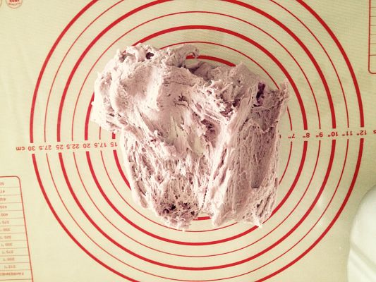
2. 分割面团
排气后，将面团分割为20克一个的小面团。
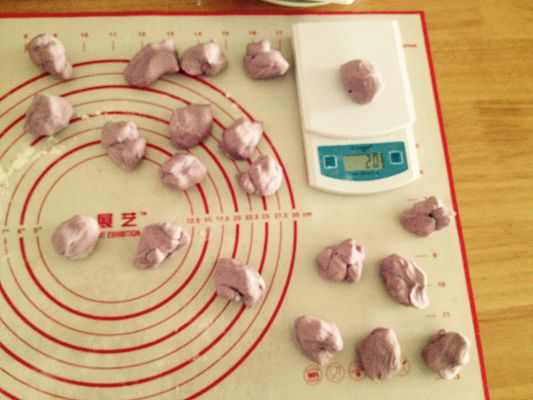
3. 编花造型
3.1. 步骤一
取四个小面团，分別揉成22厘米左右的长条；
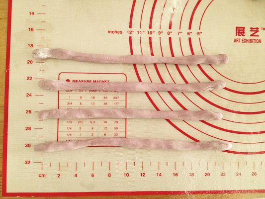
3.2. 步骤二
将四条面排成 ＃ 字形状；
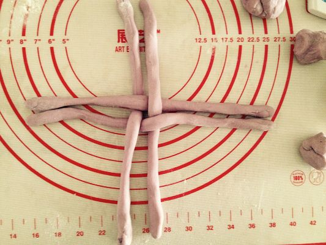
3.3. 步骤三
顺时针方向，（以上方为例）左手边压右手边的那根面；
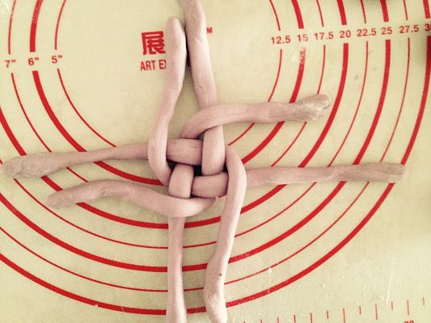
3.4. 步骤四
逆时针方向，（以上方为例）右手边压左手边的那根面；
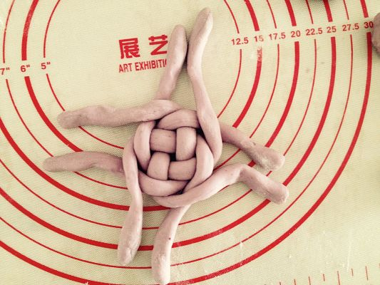
3.5. 步骤五
重复 步骤三 和 步骤四，直到面条全部盘完为止，压紧最低端；
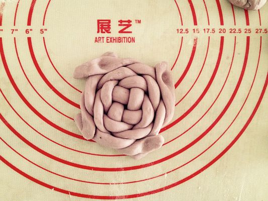
3.6. 步骤六
将盘好的面翻过来，将四个底边向内聚拢，窝紧；
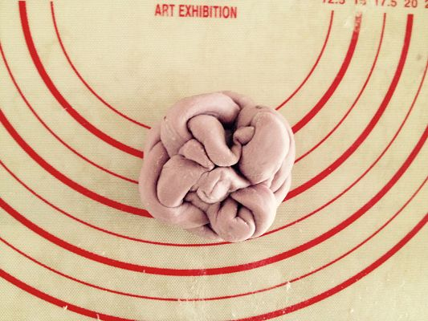
3.7. 步骤七
窝紧后，倒过来塑形即可；
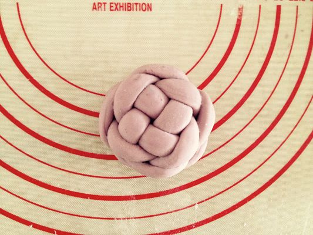
4. 棒棒糖造型
取两个小面团，搓成条状，像麻花一样扭在一起，盘起来即可。
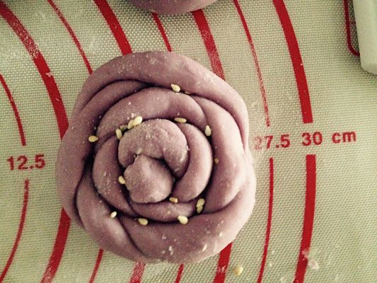
5. 刺猬造型
将小面团揉成刺猬的形状，用剪刀剪出刺来就可以了，拿黑芝麻做眼睛。
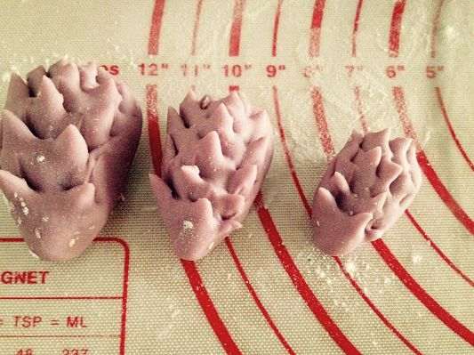
6. 小猪造型
将小面团揉成椭圆形，贴上椭圆形的猪鼻子，拿牙签扎上鼻孔，取正方形小面片，对角切开，最长边的两个角捏在一起，贴在猪脸上，一只呆萌呆萌的小猪猪就做好了。
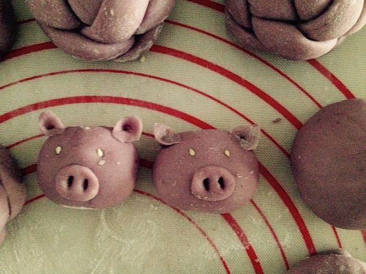
5. 赤裸炫耀
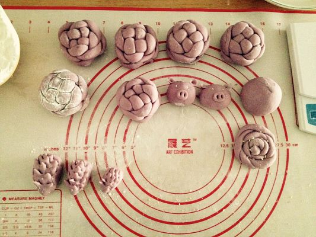
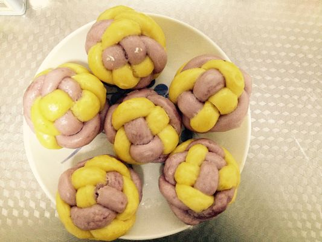
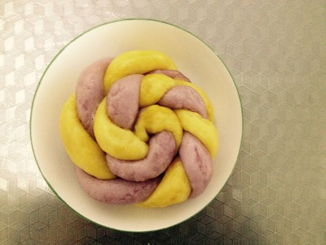